Наука · журнал «ДентАрт» 2013 №4 (73)
Пацієнти з ВІЛ-статусом на повсякденному прийомі лікаря-стоматолога
HIV-POSITIVE PATIENTS ON DAILY APPOINTMENT OF DENTIST
Колись нове і нікому не відоме захворювання ВІЛ/СНІД за 30 з гаком років охопило усі континенти і країни. Згідно з офіційними даними ВООЗ, нині на нашій планеті зареєстровано близько 34 млн. людей зі статусом ВІЛ. Кожні 10 секунд на Землі з'являється новий ВІЛ-інфікований, і щодня помирають 20 тисяч людей, хворих на СНІД.1
За темпами поширення ВІЛ/СНІДу Україна входить до п'ятірки світових лідерів і посідає перше місце в Європі. У нашій країні кількість людей із статусом ВІЛ прогресивно зростає, і сьогодні вже можна говорити про кожного 100-го мешканця України як про ВІЛ-інфікованого. І це лише цифри офіційної статистики, які значно спрощують реальну епідеміологічну картину. Абсолютна більшість людей зі статусом ВІЛ належать до вікової групи 20-39 років. Згідно з прогнозами фахівців, пандемія ВІЛ прогресуватиме.2, 3
Причинами швидкого поширення ВІЛ-інфекції є загальна сприйнятливість людей до ВІЛ, різноманітність природних шляхів передачі, висока контагіозність вірусу, тривалий період заразності інфікованого вірусом, відсутність ефективних способів лікування і профілактики. У нашому суспільстві, на жаль, існує низка соціальних аспектів, що обумовлюють високу поширеність ВІЛ-інфекції. До них належать брак знань і недостатність інформації про ВІЛ, дискримінація ВІЛ-позитивних людей у суспільстві, слабка фінансова і соціальна підтримка державними структурами програм боротьби з ВІЛ-інфекцією і її профілактики.
У зв'язку із суспільною дискримінацією багато людей бояться пройти тестування на ВІЛ або розкрити свій ВІЛ-статус, що значно обмежує їхні можливості отримати відповідне і своєчасне лікування. ВІЛ-позитивним громадянам, які повідомляють про свій статус, часто відмовляють у медичній допомозі і соціальних послугах, особливо коли вони належать до груп високого ризику, наприклад ін'єкційних наркоманів, працівників комерційного сексу та гомосексуалістів. Більшість ВІЛ-позитивних людей стикається з порушеннями прав на працю, освіту, медичну допомогу і конфіденційність діагнозу. Враховуючи особливості клінічного перебігу ВІЛ/СНІДу, стоматолог може бути першим лікарем, який запідозрить це захворювання у пацієнта. Більше того, лікар-стоматолог повинен займати активну позицію у виявленні ВІЛ-інфікованих і хворих на СНІД. Попри те, що в слині ВІЛ-інфікованих збудник міститься у слідовій кількості, стоматологи, як і інші фахівці, що контактують з біологічними рідинами організму хворого, належать до групи високого професійного ризику.4
У зв'язку з високим рівнем ризику і недостатнім забезпеченням стоматологів засобами індивідуального захисту відзначається висока тривожність стоматологічної команди у ставленні до ВІЛ-інфікованих пацієнтів.5 Ось чому толерантність до таких пацієнтів — на неприпустимо низькому рівні, а відповідно знижується якість, адекватність і своєчасність стоматологічної допомоги ВІЛ-інфікованим і погіршується якість їхнього життя.
Високий рівень соціальної стигматизації ВІЛ-інфікованих негативно впливає на лікарів, які працюють з цим контингентом хворих. Результатом є байдужість, неуважність і навіть відраза до ВІЛ-інфікованих з боку медичного персоналу. Іноді має місце навіть відверта відмова в наданні медичної допомоги, зумовлена обтяженим інфекційним статусом пацієнта. Ті ж лікарі, які, виконуючи свій обов'язок, все-таки працюють з ВІЛ-позитивними пацієнтами, часто своїм ставленням дають пацієнтові зрозуміти, що контакт з ним украй небажаний, і будь-якими шляхами уникають повторного прийому. Лікарям-стоматологам слід враховувати, що пацієнти з ВІЛ-статусом перебувають у стані хронічного стресу, у них змінюється сприйняття модусу майбутнього, вони потребують психологічного супроводу, усунення гнітючих почуттів з приводу того, що їх чекає.6
З метою виявлення особливостей стоматологічного статусу ВІЛ-інфікованих пацієнтів і формування підходів до їх прийому було обстежено 94 ВІЛ-позитивних особи віком 23-49 років, які склали групу дослідження (І). До групи контролю (ІІ) увійшли 35 осіб без статусу ВІЛ віком 21-45 років. Клінічне обстеження пацієнтів провадили на базі Полтавського обласного центру профілактики і боротьби зі СНІДом і Полтавської обласної клінічної стоматологічної поліклініки впродовж 2011-2013 рр. Здійснювався детальний збір скарг, анамнезу, загальний огляд з визначенням стану обличчя і шиї, шкірних покривів, видимих слизових оболонок носа і очей, червоної облямівки губ, лімфатичних вузлів щелепно-лицевої ділянки, точок виходу гілок трійчастого нерва. Огляд порожнини рота включав визначення стану слизової оболонки рота, язика, слинових залоз, зубних рядів. Розраховували індекси КПУ, гігієнічний індекс (ГІ) за Гріном-Вермильоном, РМА в модифікації Парма, пародонтальний індекс (ПІ) за Ремфьордом, КПІ за Леусом, пробу Писарєва-Шіллера, йодне число Свракова та індекс кровоточивості за Мюллеманом.7 Проводили тест з флосом і апаратну галіметрію для визначення наявності і рівня галітозу у обстежених пацієнтів.8 Використовували портативний тестер свіжості дихання фірми Аірліфт (Airlift). Вивчали низку психологічних характеристик ВІЛ-інфікованих пацієнтів, таких як екстраверсія, інтроверсія, нейротизм і тривожність. Тип особи і рівень емоційної лабільності (нейротизм) оцінювали за допомогою особового запитальника Айзенка (H. J. Eysenck), адаптованого в Санкт-Петербурзькому науково-дослідному психоневрологічному інституті ім. В. М. Бехтерєва. Результати інтерпретували за Л. А. Ульяновою. Тривожність вивчали у двох диспозиціях: реактивній і особовій. З цією метою використали шкалу Спілбергера (C. D. Spielberger), адаптовану Ю. Л. Ханіним.9
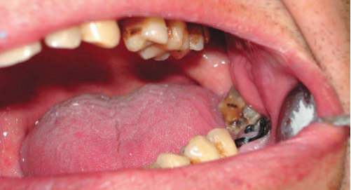
Обробка результатів дослідження провадилася з використанням методів математичної статистики з урахуванням середніх вибіркових значень (М) і помилок середніх значень (m) у групах обстежених людей. Для визначення достовірності різниці між групами використали критерій Стьюдента (t). Відмінності вважалися достовірними при вірогідності помилки p<0,05.10 Серед ВІЛ-інфікованих, які брали участь у дослідженні, переважна кількість пацієнтів мала ІІІ (39 осіб) і IV (26 осіб) стадію основного захворювання. I і II стадії ВІЛ-інфекції були діагностовані у 18 і 11 осіб відповідно (графік 1). Прогресування захворювання за час спостереження інфекціоніст зафіксував у 58 осіб (61,7%).
Важливим є той факт, що в усіх ВІЛ-інфікованих визначається низка перенесених і супутніх захворювань. При цьому майже у 32% випадків супутніми є хронічні вірусні гепатити. СНІД-індикаторні стани констатовані у 37 осіб групи дослідження (39,36%). Поширеність одонтопатології як у групі дослідження, так і в групі контролю становить 100%. При цьому інтенсивність ураження твердих тканин у ВІЛ-інфікованих в 1,72 раза вища у порівнянні з неінфікованими. Середня кількість уражених карієсом зубів у пацієнтів групи дослідження у 3,82 раза більша, ніж у групі порівняння, тоді як середня кількість запломбованих зубів достовірно не відрізняється. Кількість зубів, видалених з приводу карієсу і його ускладнень, у 3,45 раза більша у ВІЛ-позитивних пацієнтів у порівнянні з не інфікованими ВІЛ.
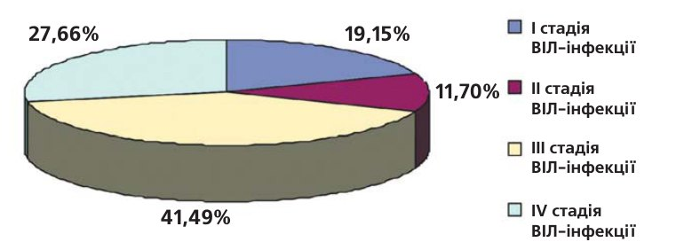
При обстеженні ВІЛ-інфікованих пацієнтів звертав на себе увагу факт великої кількості зруйнованих зубів, які не підлягають відновленню (фото 1). У результаті проведеного дослідження виявлено пародонтопатологію у 98,94% обстежених. При цьому діагноз гінгівіт було поставлено у 7,45%, а генералізований пародонтит — у 91,49%. Розподіл за ступенями тяжкості генералізованого пародонтиту в обстежених I групи такий: початковий ступінь діагностовано у 6,38% випадків, І ступінь — у 32,98%, ІІ ступінь — у 29,79%, ІІІ ступінь — у 22,34%. Серед гінгівітів, як самостійних, так і симптоматичних, переважно зустрічалася катаральна форма, але було діагностовано і гіпертрофічні (4,26% випадків) та виразково-некротичні (9,57% випадків) ураження.
У пацієнтів з ВІЛ-інфекцією у деяких клінічних ситуаціях спостерігали незначну вираженість ознак запалення і візуальну відносну оптимістичність клінічної картини в порожнині рота. При інструментальному та рентгенологічному дослідженні виявлявся реальний стан тканин пародонту, який був набагато тяжчий, ніж можна було припустити спочатку при огляді (фото 2-6). Спостерігалися характерні для ВІЛ-інфекції оральні прояви, такі як лінеарна еритема, волосиста лейкоплакія язика, ВІЛ-асоційований некротичний гінгівіт, кандидоз слизової оболонки рота і т.д. (фото 3-10).
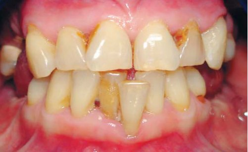
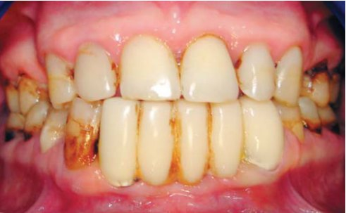
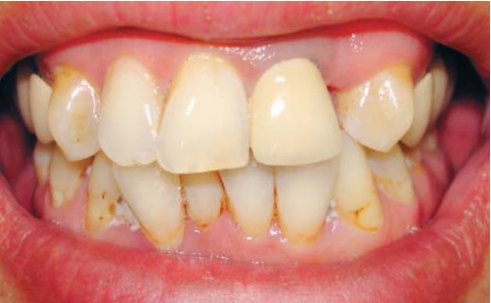
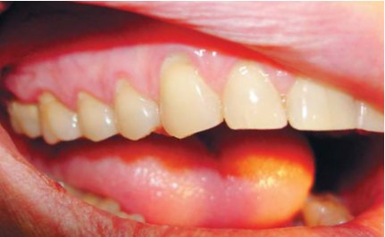
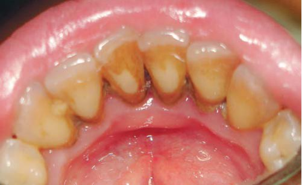
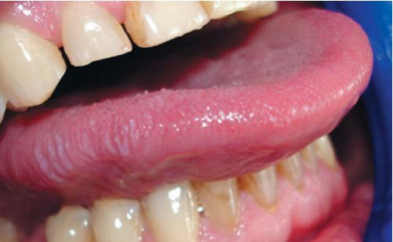
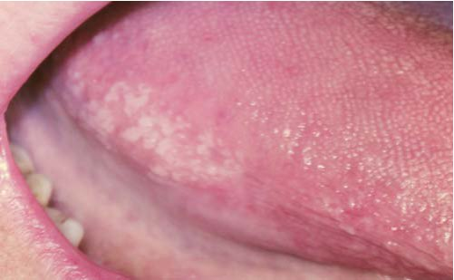
У групі порівняння захворювання тканин пародонту діагностовано у 82,86% обстежених, при цьому нозологічні форми розподілилися таким чином: генералізований пародонтит III ступеня тяжкості виявлено у 2,86% випадків, II ступеня — у 8,57%, I ступеня — у 25,71%, початкового ступеня — у 8,57%. У групі контролю діагностовано також локалізований пародонтит у 1 людини (2,86% випадків), папіліт теж у 1 обстеженого (2,86%). Гінгівіт виявився найбільш поширеною патологією тканин пародонту в групі порівняння, зустрічався у 31,43% випадків і характеризувався лише катаральною формою. Загальна клінічна картина обстежених групи порівняння свідчить про тенденцію до легшого перебігу захворювань тканин пародонту в порівнянні з пацієнтами зі статусом ВІЛ.
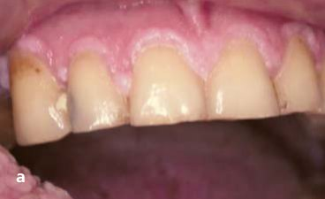
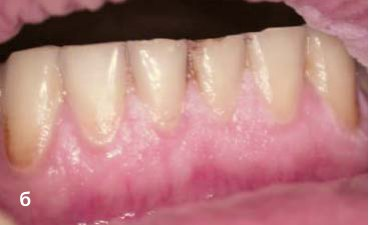
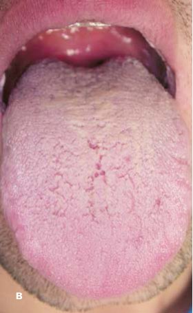
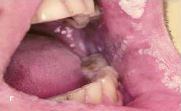
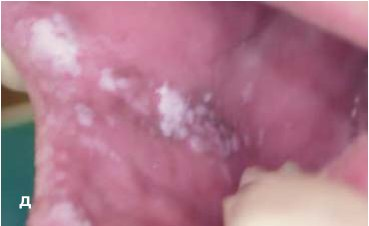
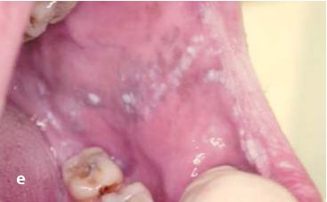
Фото 9 (а-е). Зміни в порожнині рота пацієнта В., 30 р., ІV стадія ВІЛ.
Результати індексної оцінки стану порожнини рота пацієнтів груп дослідження і порівняння подано в таблиці 1. Аналіз результатів індексної оцінки порожнини рота обстежених дозволив виявити достовірно вищі показники у групі дослідження як для КПУ і гігієнічного, так і для гінгівальних і пародонтальних індексів. Це свідчить про вищу інтенсивність ураження, швидке прогресування одонто- і пародонтопатології у людей зі статусом ВІЛ.
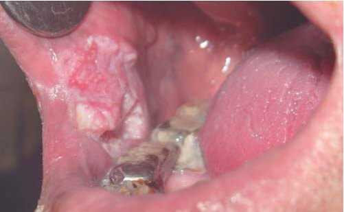
| № п/п | Показники | Групи обстежених | р | |
|---|---|---|---|---|
| І (n=94) | ІІ (n=35) | |||
| 1. | КПУ | 15,32±0,5 | 8,89±0,83 | < 0,001 |
| 2. | К | 4,47±0,34 | 1,17±0,22 | < 0,001 |
| 3. | П | 6,62±0,42 | 6,49±0,72 | > 0,05 |
| 4. | У | 4,24±0,37 | 1,23±0,29 | < 0,001 |
| 5. | OHI-S за Гріном-Вермильоном | 1,37±0,04 | 0,77±0,06 | < 0,001 |
| 6. | DI-S | 1,86±0,05 | 1,09±0,09 | < 0,001 |
| 7. | CI-S | 0,86±0,04 | 0,43±0,05 | < 0,001 |
| 8. | РМА в модифікації Парма | 37,95±1,33 | 18,66±1,5 | < 0,001 |
| 9. | ПІ за Ремфьордом | 3,8±0,11 | 2,02±0,22 | < 0,001 |
| 10. | КПІ за Леусом | 3,49±0,09 | 2,05±0,20 | < 0,001 |
| 11. | Йодне число Свракова | 3,87±0,23 | 2,74±0,27 | < 0,01 |
| 12. | Індекс кровоточивості за Мюллеманом | 1,36±0,05 | 0,74±0,06 | < 0,001 |
| 13. | ТЕР-тест | 3,06±0,13 | 2,43±0,23 | < 0,05 |
| 14. | Апаратна галіметрія | 1,82±0,07 | 1,89±0,13 | > 0,05 |
| 15. | Тест з флосом | 2,44±0,11 | 2,23±0,17 | > 0,05 |
Результати психологічного тестування виявили приблизно рівний розподіл ВІЛ-інфікованих пацієнтів за типом особи (47,62% екстравертів і 52,38% інтровертів). Відносно емоційно стабільними виявилися 38,1% обстежених, а 61,9% характеризувались емоційною лабільністю, що свідчить про виражений рівень нейротизму. Стосовно показника тривожності слід підкреслити, що в групі дослідження пацієнтів з низьким рівнем тривожності не виявлено. ВІЛ-позитивні пацієнти характеризувалися переважно високим і рідше помірним рівнем реактивної і особистісної тривожності, що свідчить про виражену психоемоційну напругу респондентів.
Отже, в ході нашого дослідження виявлено вищий рівень поширеності та інтенсивності одонто- і пародонтопатології у ВІЛ-інфікованих пацієнтів порівняно з не інфікованими ВІЛ. При цьому психологічне тестування підтверджує високий рівень психоемоційної напруги і нейротизму у пацієнтів зі статусом ВІЛ.
Працюючи на щоденному прийомі, лікар-стоматолог має справу і з ВІЛ-інфікованими пацієнтами. Не всі пацієнти зі статусом ВІЛ знають про свою проблему, до того ж не кожен, у кого діагностована ВІЛ-інфекція, повідомить про це, сидячи у стоматологічному кріслі. Висока компетентність, уважність і настороженість лікаря можуть зіграти найважливішу роль у продовженні життя пацієнта і поліпшенні його якості, а також забезпечать безпеку самому лікареві-стоматологові і його команді. Але з іншого боку, такт, високі людські якості, усвідомлення мінливості нашого світу, уміння знаходити психологічні точки контакту з пацієнтом не менш важливі для стоматолога, особливо з урахуванням роботи із соціально дискримінованими, стигматизованими і пригніченими хронічним стресом ВІЛ-позитивними пацієнтами.
Література
- http://www.who.int/hiv/en/
- Піддубна А. І. ВІЛ-інфекція в Сумській області / А. І. Піддубна, М. Д. Чемич //Сучасні інфекції. —2010. — №3. –С.40-44.
- Богадельников И. В. ВИЧ/СПИД – сегодня, а завтра? / И. В. Богадельников //Новости медицины и фармации в Украине. – 2011. —№20(392). –С.8.
- Бургонский В. Г. Лекция: СПИД в аспекте стоматологического приема / В. Г. Бургонский // Современная стоматология. – 2002. —№4. –С.108-112.
- Рабинович И. М. Средства индивидуальной защиты стоматологической команды в профилактике перекрестного инфицирования ВИЧ-инфекцией и вирусными гепатитами / И. М. Рабинович, А. И. Шатохин // Клиническая стоматология. – 2009. —№3. –С.90-92.
- Люди и ВИЧ / [Под ред. Е. Пурик. ]. – К. : из-во информационно-ресурсного центра Международного Альянса по ВИЧ/СПИД, 2001. –350 с.
- Мащенко И. С. Болезни пародонта / И. С. Мащенко. – Днепропетровск: КОЛО, 2003. –271 с.
- Попруженко Т. В. Галитоз / Т. В. Попруженко, Н. В. Шаковец. –М.: МЕДпрес-информ, 2006. –48 с.
- Михайлов Б. В. Психотерапия в общесоматической медицине / Б. В. Михайлов, О. И. Сердюк, В. А. Федосеев. – Харьков: Прапор, 2002. –108 с.
- Герасимов А. Н. Медицинская статистика: Учебное пособие / Герасимов А. Н. – М.: ООО «Медицинское информационное агентство», 2007. –480 с.